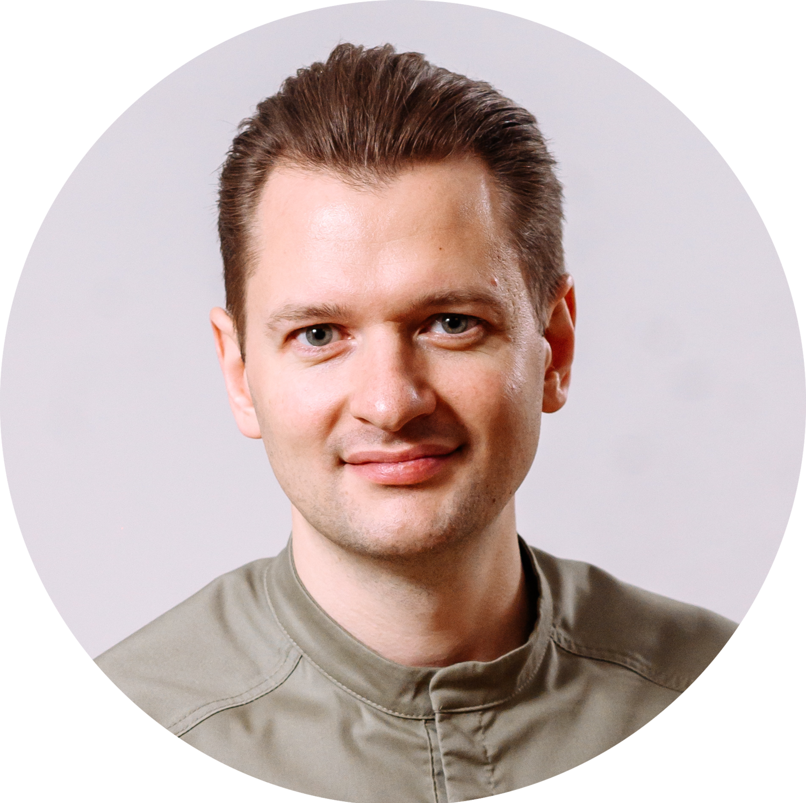
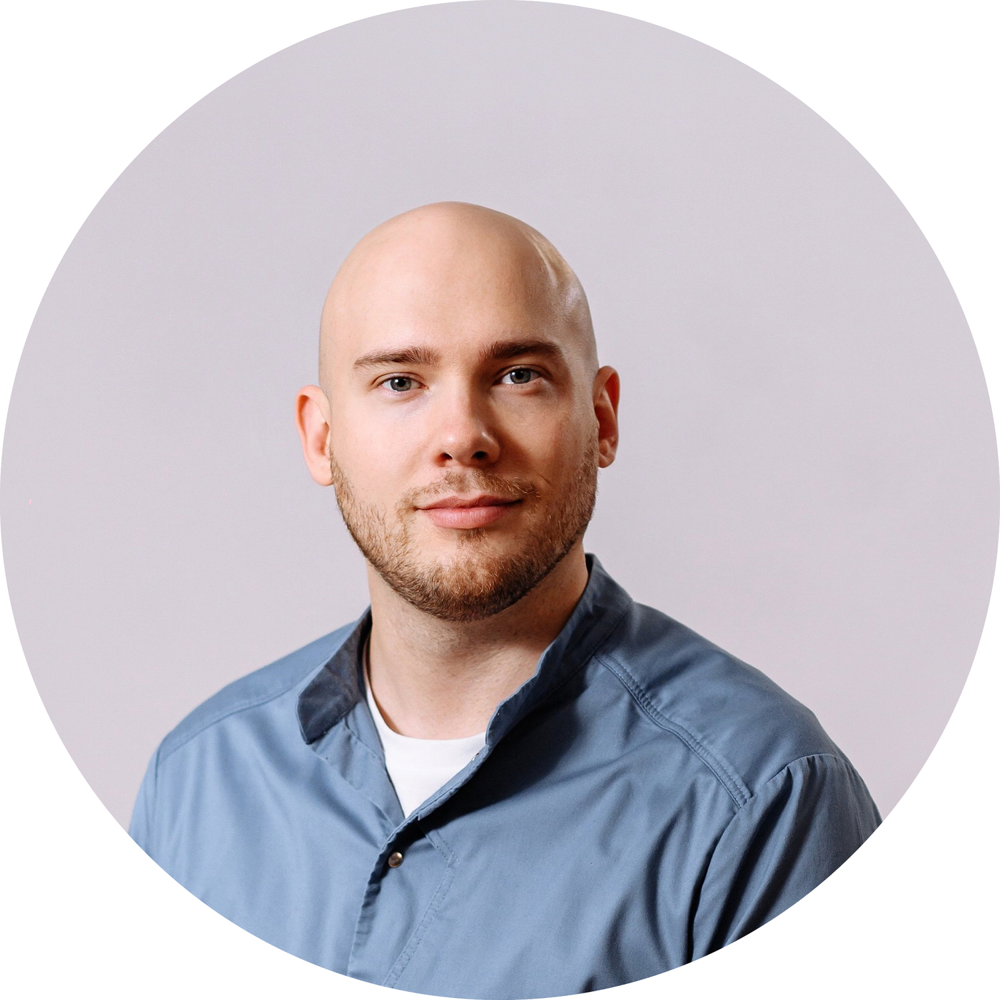
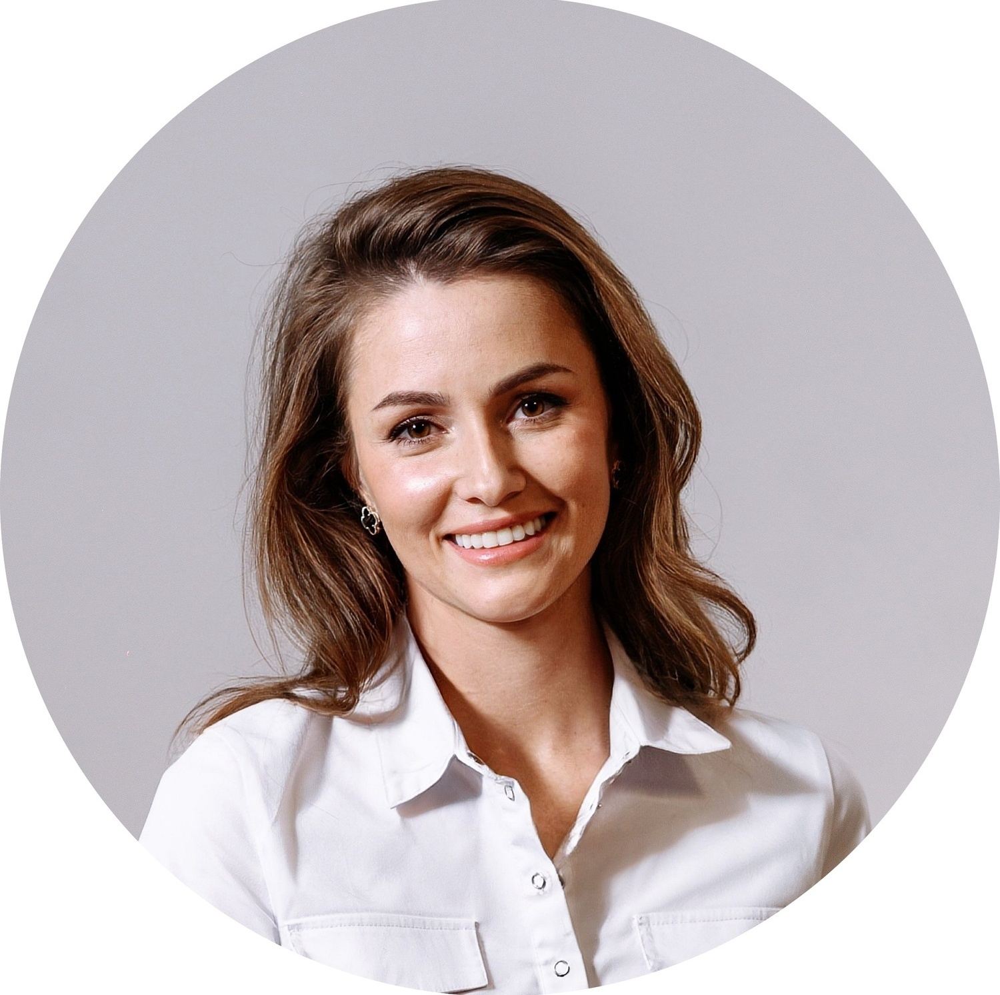
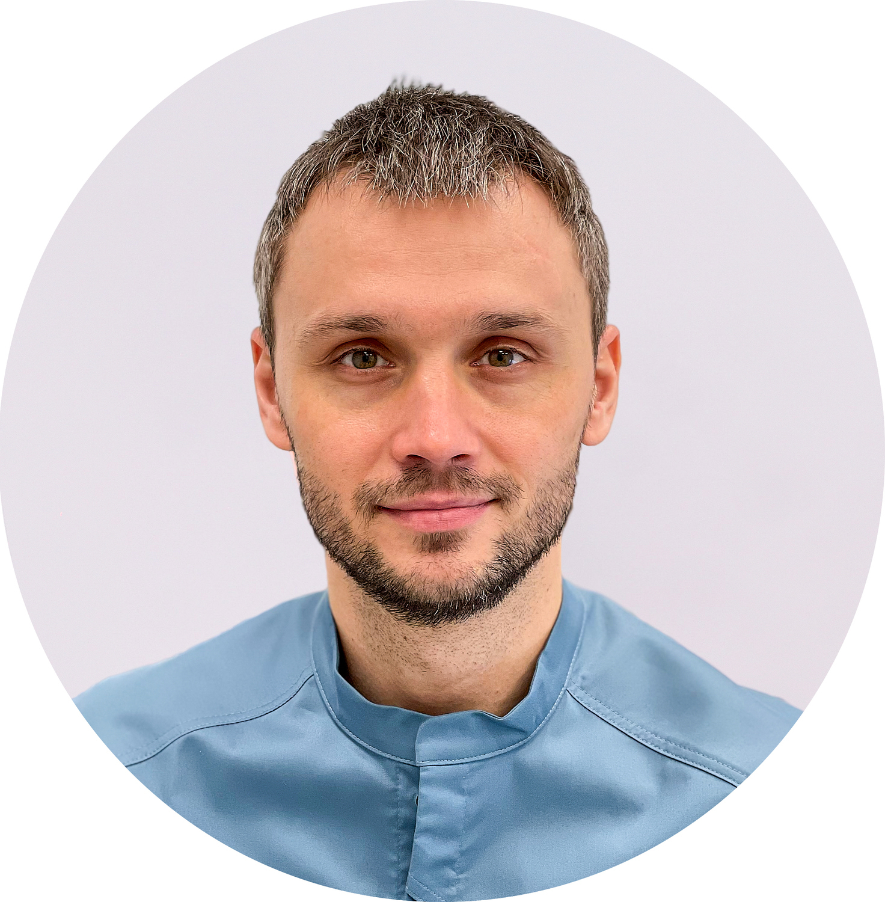
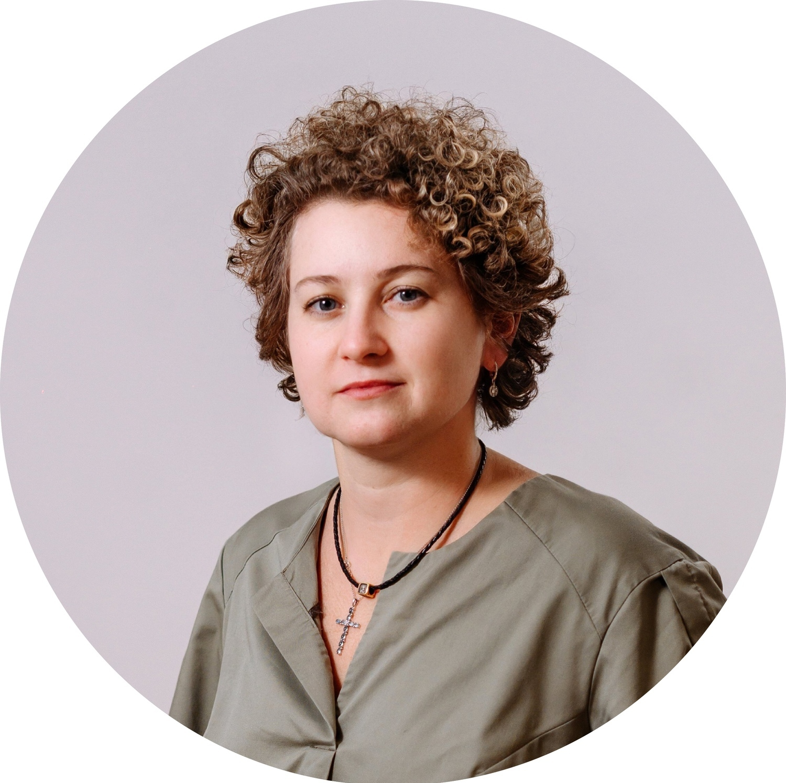
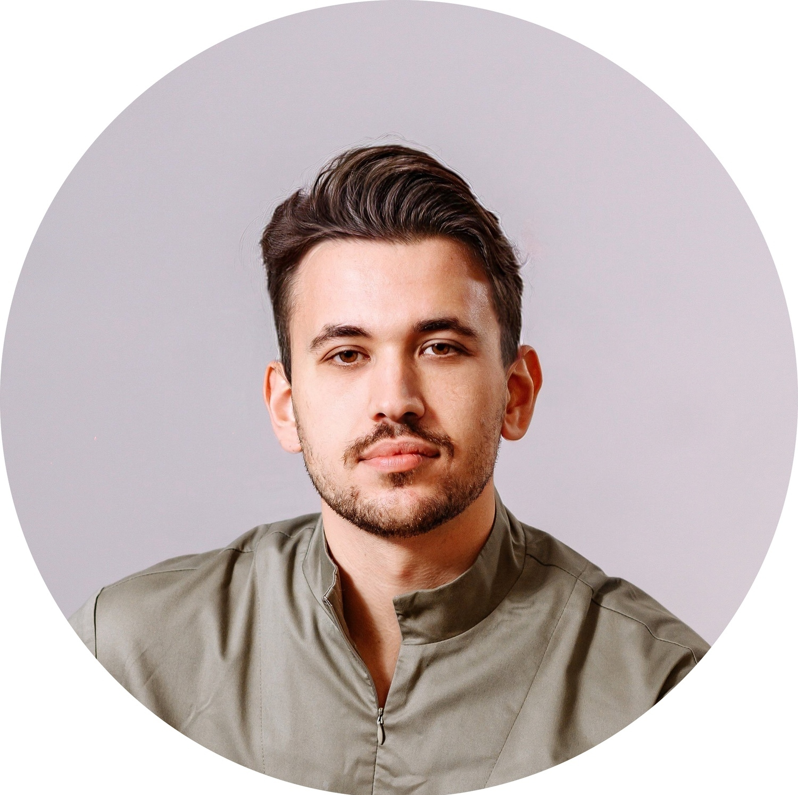
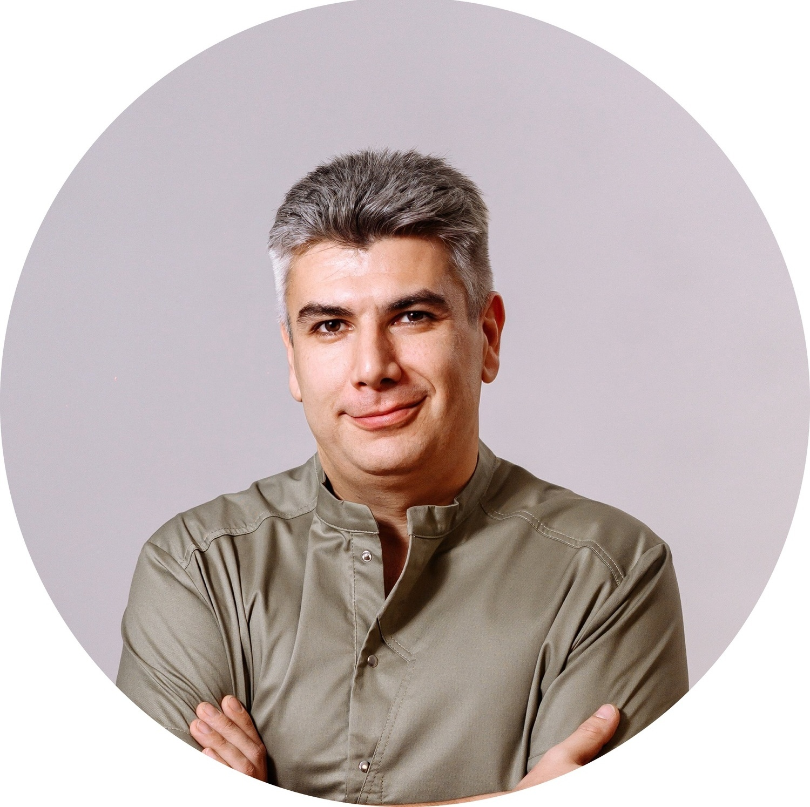
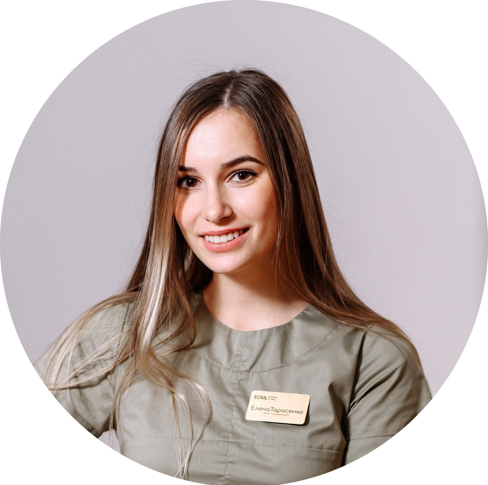
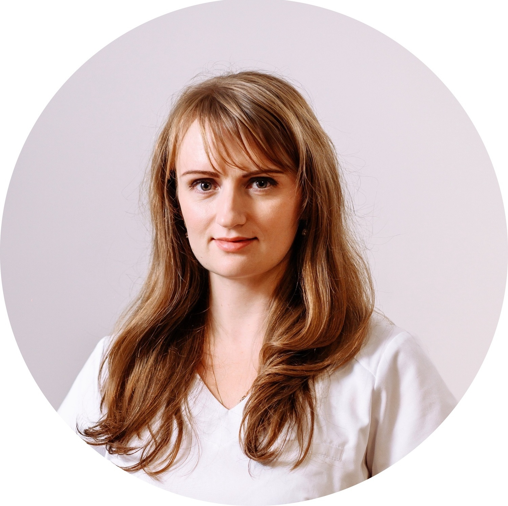
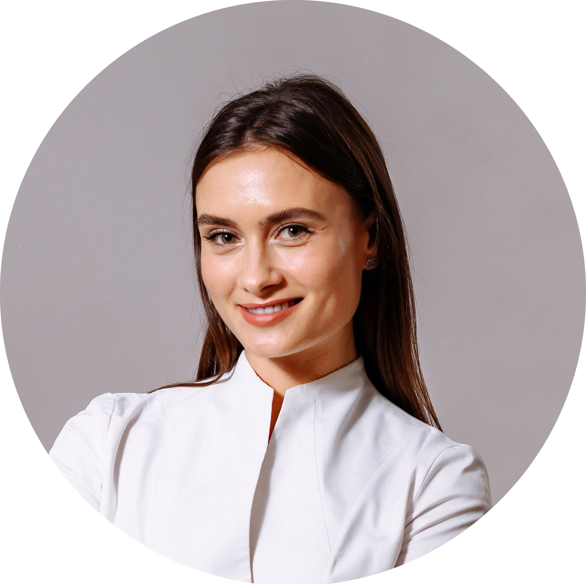

Специалисты с международным опытом, которым не нужно ничего доказывать — только хорошо лечить.
Мы не берём количеством. В клинике работает небольшая команда, где каждый врач специализируется на своём направлении. Это значит, что ваш случай попадает к специалисту — а не к «стоматологу-универсалу», который лечит всё подряд.

Хирург-имплантолог, пародонтолог

Хирург-имплантолог

Стоматолог-терапевт

Стоматолог-терапевт-эндодонтист

Стоматолог-ортопед

Стоматолог-ортопед

Стоматолог-ортопед

Врач-гигиенист-зубной техник

Врач-пародонтолог

Стоматолог-ортодонт
Укажите в комментарии, к какому специалисту хотите записаться, и мы подберём удобное время.